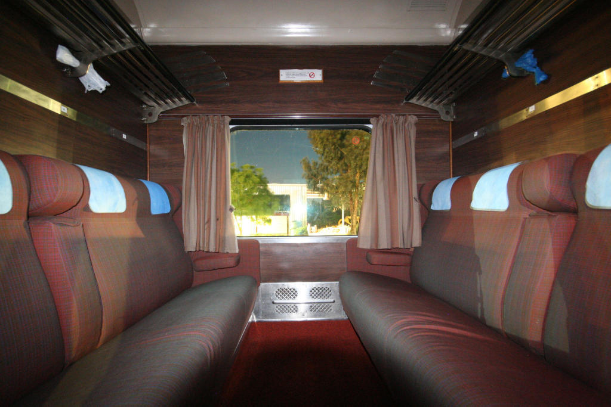

chapter8.2--handout
Background Information
Day coach 以及其他种类的列车
原文：The day-coach — he was penniless now — was hot.
Gatsby为了到Louisville去一趟，花光了自己仅剩的军饷，最后只能选择坐炎热拥挤的day coach. 这里的day coach就是指“硬座列车”，一般只提供坐席，并且环境和服务设施都相对简陋，这和白天的路线都比较短有关。
用于运载乘客的统称为“客运列车”（passenger car）, coach是里面最常见的一种，专指“以座椅设置为主的”，也叫作chair cars. coach还分别有两种类型（viriants）：
1、"open" coach 敞开式坐席列车
座椅成排分布在中央走道的两边（with row upon row of seats on the sides of the center corridor）, 如下↓
2、"closed" coach (或compartment car) 包厢式坐席列车
两排座位相对，一侧是通道，一侧靠窗（a side corridor to connect individual compartments along the body of the train, each with two rows of seats facing each other）, 如下↓

除了coach这种坐席列车外，为了保证乘客旅途的舒适以及满足更高的需求，还设计了其他种类的列车：
3、Sleeping car 卧铺列车
和day coach只跑白天的短途不一样，跑夜间长途的列车更需要给旅客提供更舒适的休息（to make nighttime travel more restful），所以有了sleeping car, 也可以叫sleeper或Pullman cars, 因为这种列车是由一个叫George Pullman的美国人在19世纪30年代设计的。
如果需要给外国朋友解释我们的卧铺列车就可以用到sleeper这个词啦~比如“硬卧”是hard sleeper (normally with six bunks per compartment), “软卧”则是soft sleeper (typically with four bunks).
4、Lounge car 观景列车
作为提供奢华服务的观景列车（to offer superior comforts and amenities），其实一般只是设置为列车的其中一节车厢，挨着餐车（pulled in addition to the dining car）. 里面有吧台（bar）, 长凳（bench）, 扶手椅（armchair）, 可旋转座椅（swivelling chair）等等，有的甚至还会摆一台小钢琴以及安排乐手进行表演（some may even include small pianos and are staffed by contracted musicians to entertain the passengers）.
总之就是穷尽一切可能给列车上的旅客提供消遣娱乐，这也是它比其他交通工具（飞机、巴士以及汽车）更具吸引力的地方——更多的活动、社交、饮食空间（more space to move around, socialize, eat and drink）, 还有窗外非常棒的视野（a good view）.
Vocabulary
corroborate
vt. 证实，支持（某种说法、信仰、理论等）(to provide information that supports to prove someone else's idea)
原文：“I suppose Daisy’ll call too.” He looked at me anxiously, as if he hoped I’d corroborate this.
"我想黛西也会打电话来的。"他神色不安地看着我，仿佛他希望我证实他的话。
💧corroborate表示“证实，确证”，相比confirm更正式。比如：The evidence was corroborated by two independent witnesses.
此证据由两名独立证人提供。
exasperated
adj. 愤怒的，恼火的 (very annoyed and upset)
原文：I tried four times; finally an exasperated central told me the wire was being kept open for long distance from Detroit.
我一连打了四次，最后，一个不耐烦的接线员告诉我这条线路在专等底特律的长途电话。
💧exasperated表示“非常恼火的”（extremely annoyed）, 尤其是当你感觉无能为力的时候，比如：‘Why won't you answer me?’ he asked in an exasperated voice.
“你为什么不愿意回答我？”他愤怒地问道。
Crush Your Problems
1、What could you make of that, / except / to suspect some intensity / in his conception of the affair / that couldn’t be measured?
这句话该怎么理解呢？只能猜测为他对这件事的看法带有某种无法估量的强烈感情。
💧句式拆解
that couldn't be measured作为定语从句修饰some intensity.
💧表达精讲
①make of “领会，懂得”（to understand the meaning or character of sb/sth）, 比如：I don't know what to make of (= think of) the new manager.
这位新经理，我不知道怎么评价他才好。
make of that中的that是指Gatsby说的一句话：“In any case,” he said, “it was just personal.”（"无论如何，"他说，"这只是个人的事。"）Gatsby认为Daisy虽然更爱他，但后来选择了嫁给Tom只是她的个人选择（“Of course she might have loved him just for a minute, when they were first married — and loved me more even then, do you see?”）
②in his conception of the affair “在对这件事的看法中”；the affair也是指Daisy和Tom结婚这件事；
③some intensity...that couldn't be measured “某种无法估量的强烈感情”；Nick没有直接反驳Gatsby，而是婉转地描写Gatsby对自己的看法有某种笃定和坚持，但这个程度有多少，是Nick以及我们无法把握估量的。
2、Just as / Daisy’s house had always seemed to him more mysterious and gay / than other houses, / so his idea of the city itself, / even though she was gone from it, / was pervaded with a melancholy beauty.
正如黛西家的房子在他看来一向比别的房子更加神秘和欢乐，现在路易斯维尔这个城市本身，虽然她已一去不回，在他看来还是弥漫着一种忧郁的美。
💧句式拆解
①我们先来看句子的主体部分：Just as Daisy's house had always seemed..., so his idea of the city itself...was pervaded...（Just as..., so...的结构表示“正如…，…也…”）
②even though she was gone from it 是让步状语从句作为插入结构。
这里表示的是对于Gatsby来说，Daisy家的房子和Daisy居住的城市，都对他产生了某种吸引。
3、The track curved / and now it was going away from the sun, / which / as it sank lower, / seemed to spread itself / in benediction / over the vanishing city / where she had drawn her breath.
铁轨拐了一个弯，现在是背着太阳走，西沉的太阳光芒四射，似乎为这个慢慢消失的、她曾生活过的城市祝福。
💧句式拆解
这个句子里有两个定语从句需要留意：
①which引导非限制定语从句修饰sun: which (as it sank lower) seemed to spread itself... 因此it和itself在这里都是指sun.
②where she had drawn her breath修饰the vanishing city, where相当于from which.
💧表达精讲
①spread itself in benediction over “太阳光芒四射，为……祝福”；spread over…形容“阳光铺满……”的样子；in benediction也就是to make blessings.（这里再复习一下benediction是指“祝福（祷告）”哦~）
②the vanishing city “慢慢消失的城市”，vanish表示“（从视线里 ）消失；灭绝”，相当于disappear. 这里指火车正在逐渐驶离这个城市；
③where she had drawn her breath “她曾生活过的”；draw breath也就是“呼吸”（to breathe）, 引申为“居住，生活”（to live）, 属于文学性的表达。比如：He was as kind a man as ever drew breath.（=He was the kindest man that has ever lived.）
再没有像他这么善良的人了。
4、I wasn’t worth / a decent stroke of work,/ but it was more than that / — I didn’t want to leave Gatsby.
我也没有精神干一点像样的工作，可是不仅如此——我不愿意离开盖茨比。
💧表达精讲
wasn't worth a decent stroke of work “没有精神干一点像样的工作”；worth在这里不是我们一般理解的“值得的”，而是表示 “胜任的”；decent表示“像样的”（of a good enough quality）; a stroke of work “一点活儿”（a small or insignificant amount of work）, not do a stroke of work就是指“（一个人很懒），一点活儿也不干”。
5、Usually / her voice came over the wire / as something fresh and cool, / as if a divot from a green golf-links / had come sailing in / at the office window, / but this morning / it seemed harsh and dry.
通常她的声音从电话上传来总是清凉悦耳，仿佛一块草根土从一片碧绿的高尔夫球场上飘进了办公室的窗口，但是今天上午她的声音却显得生硬枯燥。
💧表达精讲
①came over the wire “通过电话传来”；over表示“通过”，比如over the radio/telephone; the wire在这里指“电话”；
②a divot from a green golf-links “从碧绿高尔夫球场来的一块草皮”；divot指“〔打高尔夫球或马球时无意间〕削起的一块草皮”；golf-links也就是“高尔夫球场”；
这里也运用了通感的比喻手法，形容Jordan的声音就像从高尔夫球场不小心削起的草皮一样颜色碧绿、味道清新。
Content Analysis
Nick和Gatsby一直交谈到黎明，Gatsby也回忆了自己归国后一人重游故地的怅然若失。而回到现实中，我们除了可以从Nick的叙述语气中感觉到故事已经接近尾声——也就是Falling action的阶段（在高潮之后，还留有悬念没有解决），同时还可以从环境描写中捕捉到这种衰败的态势，也就是季节的突然变化——
💧Clue 1: There is a sharp turn of the weather.
Evidence 1: There was a slow, pleasant movement in the air, scarcely a wind, promising a cool, lovely day.
空气中有一种慢慢的愉快的动静，还说不上是风，预示着凉爽宜人的天气。
Evidence 2: The night had made a sharp difference in the weather and there was an autumn flavor in the air.
一夜之间天气骤然变了，空气中已经有秋意。
故事是以夏天开始的，并且情节的冲突、人物的情感，也都暗暗和气候的变化相吻合。比如到了高潮，也就是Tom, Gatsby以及Daisy的三角关系被揭露的时候，正好是最炎热的一天。而在今天的内容里，气候突然进入了秋天。除了象征感情和冲突的逐渐平息，也预示着故事的悬念很快就要水落石出。
但另一方面，Gatsby的执念并没有就此放弃，从两个细节就可以看出来——
💧Clue 2: Gatsby is not to give up on his dream.
Evidence 1: “I’m going to drain the pool to-day, Mr. Gatsby. Leaves’ll start falling pretty soon, and then there’s always trouble with the pipes.” “Don’t do it to-day,” Gatsby answered. He turned to me apologetically. “You know, old sport, I’ve never used that pool all summer?”
"我今天准备把游泳池的水放掉，盖茨比先生。树叶很快就要开始落了，那样水管子就一定会堵塞。" "今天不要搞。"盖茨比回答。他含有歉意地转身对着我，"你知道吗，老兄，我整个夏天从来没用过那个游泳池！"
当老佣人说要把泳池的水放掉的时候，Gatsby拒绝了。其实这个举动很有象征意义——对于他来说，夏天还没有完全过去；或者说，他还试图抓住仅存的一点重温旧梦的希望。
Evidence 2: “I suppose Daisy’ll call too.” He looked at me anxiously, as if he hoped I’d corroborate this.
"我想黛西也会打电话来的。"他神色不安地看着我，仿佛他希望我证实他的话。
尽管等了一整晚Daisy似乎都没什么动静（他心里一定是有失落的），但Gatsby还是觉得Daisy会给自己来电话。只是在Nick看来，他已经少了很多不确定。
Today's Bonus
💧The best compliments you could ever give
“They’re a rotten crowd,” I shouted across the lawn. “You’re worth the whole damn bunch put together.”
"他们是一帮混蛋，"我隔着草坪喊道，"他们那帮人加起来都比不上你。"
这是Nick发自肺腑的对Gatsby的称赞。并且连Nick自己都觉得很庆幸说了这句话，虽然从头到尾他都对Gatsby持鄙夷态度。而听到这句话的Gatsby也露出了会心一笑。
其实人和人之间往往就是这样黏合起来的。两个人的亲近和连接并不在于平时说了多少好话，只需要关键时刻的一句赞美，就可以建立起宝贵的理解和信任。那么称赞别人都有哪些走心的表达呢？马上给大家奉上~
1、You are nothing less than special.
你是无与伦比的特别。
nothing less than “不亚于”，其实就是在强调“完完全全地，简直”（completely, exactly）.
2、You are one of a kind.
你是独一无二的。
这里的a kind其实就是在说对方是“独一无二的”，独属于一个“品类”的，比如身上有别人所没有的特质。
3、You are the most perfect you there is.
这样的你就是最完美的。
这句话其实就是在说：If there is a most perfect you, you are the one.
4、You are the best friend/wife/husband anyone could ask for.
遇见你，三生有幸。
5、You have a heart of gold.
你有一颗金子般的心。
把一个人的心比喻成金子其实并不俗气，因为这不是每个人都能拥有的，毕竟大部分人都只是金玉其外而败絮其中。
6、Thank you for being you.
你是你，真好。
最后还想跟大家分享一句话：Like attracts like. 所以大胆地向身边的人送出自己的赞美吧~